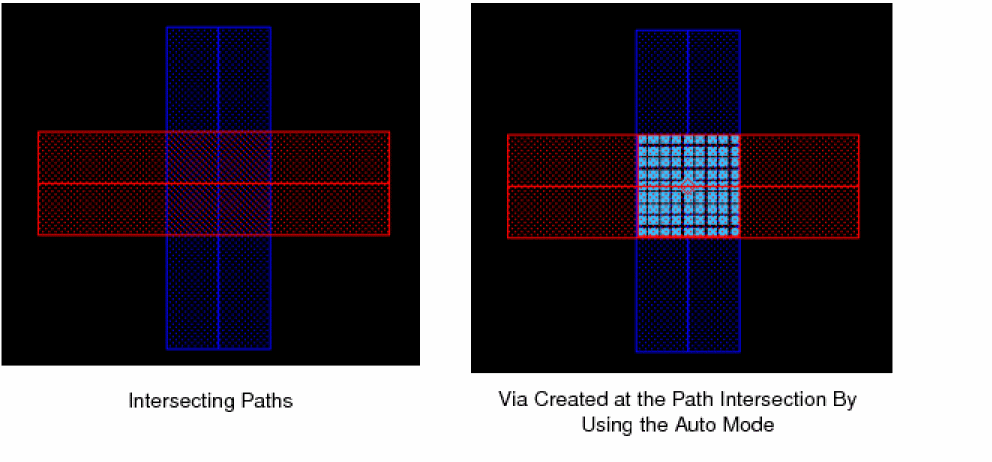

Placing a Via Automatically with a Single Click
To create a via using Auto mode and automatically place the via with a single click:
- In the layout window, choose Create – Via to open the Create Via form.
-
Select Auto option for Mode.
- Use the Options button if you want to open the Create Via Options form to set the default viaDefs to be available during via creation and to enable overriding of the via variant parameters.
- Type the net name in the Net Name field of the Create Via form to associate the via to a particular net.
-
On the canvas, click on the overlapping area of the intersecting shapes.
 - Continue to place vias at the required locations, if needed.
-
Press
Escor click Cancel in the form to complete creating vias.
The following figures illustrate a few cases of auto via generation.
When the auto via mode creates polygonal vias, the metal shape is reduced to a single-cut-sized shape under the lower-most left cut. The via cuts must be covered by the existing metal shapes in the design. For stacked vias, extra metal shapes for the intermediate layers are created, which are then associated with the vias as child shapes. Editing polygonal via parameters by using property editor or properly assistant or modifying the via geometries with Chop or Stretch commands is not supported.
For polygons or pathsegs, the coverage and cuts between vias are always same, irrespective of where you click on the shape.
If there are multiple overlapping shapes, you can center-click and drag to select an area that encloses the required overlapping shapes. Vias are generated at all the intersecting shapes.
In auto via mode, a via is created in the intersection between the overlapping shapes and the area selected by center-click and dragging the pointer.
Related Topics
Return to top